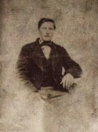
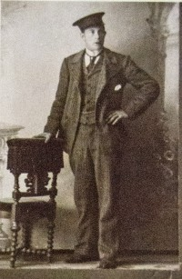

Lovise og Håkon sin slekt og familie
Lovise f. Eggan og Håkon Wahl
Personside 1 025
Borghild Margrethe Lorentsdatter Fjerstad
K, #25601, f. 24 november 1911, d. 27 oktober 1987
Familie: Martin Oldus Mikalsen Hammer (f. 22 februar 1895, d. 24 januar 1968)
| Sønn | Bjørn Hammer+ (f. 19 januar 1937, d. 17 august 2021) |
Biografi
Borghild Margrethe Lorentsdatter Fjerstad ble født den 24 november 1911 på/i Fjerstad, Inderøy, Nord-Trøndelag. Hun giftet seg med Martin Oldus Mikalsen Hammer. Hun døde den 27 oktober 1987 på/i Inderøy, Nord-Trøndelag. Hun ble gravlagt på/i Hustad kirkegård, Inderøy, Nord-Trøndelag.
Borghild Margrethe Lorentsdatter Fjerstad was also known as Borghild Margrethe Hammer.
| Sist redigert | 2 januar 2019 00:00:00 |
Ole Bernhard Olsen Havik
M, #25602, f. 23 august 1871, d. 12 januar 1956
Familie: Gollaug Andersdatter Agle (f. 16 november 1867, d. juli 1923)
| Sønn | Gunnar Havik+ (f. 30 juni 1911, d. 15 desember 1986) |
Biografi
Ole Bernhard Olsen Havik ble født den 23 august 1871 på/i Vemundvik, Namsos, Nord-Trøndelag. Han giftet seg med Gollaug Andersdatter Agle den 30 mai 1891 på/i Namsos, Nord-Trøndelag. Han døde den 12 januar 1956 på/i Namsos, Nord-Trøndelag.
| Sist redigert | 27 februar 2022 00:00:00 |
Gollaug Andersdatter Agle
K, #25603, f. 16 november 1867, d. juli 1923
Familie: Ole Bernhard Olsen Havik (f. 23 august 1871, d. 12 januar 1956)
| Sønn | Gunnar Havik+ (f. 30 juni 1911, d. 15 desember 1986) |
Biografi
Gollaug Andersdatter Agle ble født den 16 november 1867 på/i Agle, Snåsa, Nord-Trøndelag. Hun giftet seg med Ole Bernhard Olsen Havik den 30 mai 1891 på/i Namsos, Nord-Trøndelag. Hun døde i juli 1923. Hun ble gravlagt den 13 juli 1923 på/i Namsos kirkegård, Namsos, Nord-Trøndelag.
Gollaug Andersdatter Agle was also known as Gollaug Havik.
| Sist redigert | 27 februar 2022 00:00:00 |
Alwar Erik Daniel Ekengaard
M, #25604, f. før 1907
Familie: Olga Elisabeth Elisabeth (f. før 1907)
| Sønn | Olow Ekengaard+ (f. 9 mai 1925) |
Biografi
Alwar Erik Daniel Ekengaard ble født før 1907 på/i Stockholm, Sverige. Han giftet seg med Olga Elisabeth Elisabeth.
| Sist redigert | 24 januar 2014 00:00:00 |
Olga Elisabeth Elisabeth
K, #25605, f. før 1907
Familie: Alwar Erik Daniel Ekengaard (f. før 1907)
| Sønn | Olow Ekengaard+ (f. 9 mai 1925) |
Biografi
Olga Elisabeth Elisabeth ble født før 1907. Hun giftet seg med Alwar Erik Daniel Ekengaard.
Olga Elisabeth Elisabeth was also known as Olga Elisabeth Ekengaard.
| Sist redigert | 24 januar 2014 00:00:00 |
Egil Johansen
M, #25606, f. 1885
Familie: Randi Kristensdatter Trettølen (f. 1890)
| Sønn | Norvald Johansen+ (f. 9 november 1909, d. 22 januar 1990) |
Biografi
Egil Johansen ble født i 1885. Han giftet seg med Randi Kristensdatter Trettølen.
| Sist redigert | 21 juli 2021 00:00:00 |
Randi Kristensdatter Trettølen
K, #25607, f. 1890
Familie: Egil Johansen (f. 1885)
| Sønn | Norvald Johansen+ (f. 9 november 1909, d. 22 januar 1990) |
Biografi
Randi Kristensdatter Trettølen ble født i 1890. Hun giftet seg med Egil Johansen.
Randi Kristensdatter Trettølen was also known as Randi Johansen. Hun bodde på/i Orkdal, Sør-Trøndelag.
| Sist redigert | 21 juli 2021 00:00:00 |
Emil Wiger
M, #25608, f. før 1898
Familie: Sofie Sofie (f. før 1898)
| Sønn | Johan Wiger (f. 4 august 1916, d. 9 april 2004) |
Biografi
Emil Wiger ble født før 1898 på/i Grong, Nord-Trøndelag. Han giftet seg med Sofie Sofie.
| Sist redigert | 24 januar 2014 00:00:00 |
Sofie Sofie
K, #25609, f. før 1898
Familie: Emil Wiger (f. før 1898)
| Sønn | Johan Wiger (f. 4 august 1916, d. 9 april 2004) |
Biografi
Sofie Sofie ble født før 1898. Hun giftet seg med Emil Wiger.
Sofie Sofie was also known as Sofie Wiger.
| Sist redigert | 24 januar 2014 00:00:00 |
Tage Granquist
M, #25610, f. før 1902
Familie: Emma (f. før 1902)
| Sønn | Tage Granquist+ (f. 1920) |
Biografi
Tage Granquist ble født før 1902 på/i Sverige. Han giftet seg med Emma.
| Sist redigert | 24 januar 2014 00:00:00 |
Emma
K, #25611, f. før 1902
Familie: Tage Granquist (f. før 1902)
| Sønn | Tage Granquist+ (f. 1920) |
Biografi
Emma ble født før 1902. Hun giftet seg med Tage Granquist.
Emma was also known as Emma Granquist.
| Sist redigert | 9 januar 2023 10:47:03 |
Fredrik Lindquist
M, #25612, f. før 1924
Familie: Ingeborg Ingeborg (f. før 1924)
| Datter | Kjerstina Anita Lindquist+ |
Biografi
Fredrik Lindquist ble født før 1924 på/i Sverige. Han giftet seg med Ingeborg Ingeborg.
| Sist redigert | 24 januar 2014 00:00:00 |
Ingeborg Ingeborg
K, #25613, f. før 1924
Familie: Fredrik Lindquist (f. før 1924)
| Datter | Kjerstina Anita Lindquist+ |
Biografi
Ingeborg Ingeborg ble født før 1924. Hun giftet seg med Fredrik Lindquist.
Ingeborg Ingeborg was also known as Ingeborg Lindquist.
| Sist redigert | 24 januar 2014 00:00:00 |
Olav Kristain Bergum
M, #25614, f. 7 april 1917, d. 23 juni 1990
Foreldre
| Far | Oskar Eckhoff Petersen Bergum (f. 11 februar 1880, d. 1958) |
| Mor | Gusta Kristine Olsdatter Jønvik (f. 2 juni 1879, d. 3 mai 1959) |
Familie: Ellen Ovidia Gansmo (f. 1 oktober 1916, d. 12 juni 1996)
| Datter | Gudrun Odny Bergum+ |
Biografi
Olav Kristain Bergum ble født den 7 april 1917 på/i Jøa, Fosnes, Nord-Trøndelag. Han giftet seg med Ellen Ovidia Gansmo i 1945. Han døde den 23 juni 1990. Han ble gravlagt den 29 juni 1990 på/i Dun kirkegård, Jøa, Fosnes, Nord-Trøndelag.
Olav Kristain Bergum eide i 1945 Bergli 53/12; 13, Seierstad; Jøa, Fosnes, Nord-Trøndelag.
| Sist redigert | 24 januar 2014 00:00:00 |
Ellen Ovidia Gansmo
K, #25615, f. 1 oktober 1916, d. 12 juni 1996
Foreldre
| Far | Johannes Engelbert Gansmo (f. 11 juni 1868, d. 12 januar 1935) |
| Mor | Anna Margrete Bergum (f. 17 mai 1883, d. 1 april 1944) |
Familie: Olav Kristain Bergum (f. 7 april 1917, d. 23 juni 1990)
| Datter | Gudrun Odny Bergum+ |
Biografi
Ellen Ovidia Gansmo ble født den 1 oktober 1916 på/i Seierstad 53/1, Seierstad; Jøa, Fosnes, Nord-Trøndelag. Hun giftet seg med Olav Kristain Bergum i 1945. Hun døde den 12 juni 1996 på/i Fosnes, Nord-Trøndelag. Hun ble gravlagt på/i Dun kirkegård, Jøa, Fosnes, Nord-Trøndelag.
Ellen Ovidia Gansmo was also known as Ellen Ovidia Bergum.
| Sist redigert | 17 april 2022 00:00:00 |
Jon Oluf Olsen Bergum
M, #25616, f. 14 august 1843, d. mellom 1900 og 1910
Foreldre
| Far | Ole Olsen Forbregd (f. 25 oktober 1804) |
| Mor | Beret Marta Jonsdatter (f. 14 desember 1803) |
Familie: Sofie Andersdatter Alteplads (f. 18 desember 1850, d. mellom 1900 og 1910)
| Datter | Olga Baroline Johnsdatter Bergum+ (f. 4 juni 1878, d. 21 november 1909) |
| Sønn | Adolf Johnsen Bergum+ (f. 12 september 1883, d. 13 juli 1977) |
{kind=link}

Jon Bergum
Biografi
Jon Oluf Olsen Bergum ble født den 14 august 1843 på/i Berre, Namdalseid, Nord-Trøndelag. Han giftet seg med Sofie Andersdatter Alteplads den 1 januar 1876 på/i Vemundvik kirke, Namsos, Nord-Trøndelag. Han døde mellom 1900 og 1910.
Jon Oluf Olsen Bergum kjøpte i 1882 Bergum 6/3, Lødding, Vemundvik, Nord-Trøndelag. Han bodde i 1900 på/i Bergem 6/3, Vemundvik, Namsos, Nord-Trøndelag. Han eide i 1900 Bergum 6/3, Vemundvik, Nord-Trøndelag.
| Sist redigert | 18 september 2021 00:00:00 |
Sofie Andersdatter Alteplads
K, #25617, f. 18 desember 1850, d. mellom 1900 og 1910
Foreldre
| Far | Anders Ingebrigtsen Alteplads (f. før 1830) |
| Mor | Anne Marie Johnsdatter (f. før 1830) |
Familie: Jon Oluf Olsen Bergum (f. 14 august 1843, d. mellom 1900 og 1910)
| Datter | Olga Baroline Johnsdatter Bergum+ (f. 4 juni 1878, d. 21 november 1909) |
| Sønn | Adolf Johnsen Bergum+ (f. 12 september 1883, d. 13 juli 1977) |
Biografi
Sofie Andersdatter Alteplads ble født den 18 desember 1850 på/i Namdalseid, Nord-Trøndelag. Hun giftet seg med Jon Oluf Olsen Bergum den 1 januar 1876 på/i Vemundvik kirke, Namsos, Nord-Trøndelag. Hun døde mellom 1900 og 1910.
Sofie Andersdatter Alteplads ble døpt den 9 juni 1851.
| Sist redigert | 18 september 2021 00:00:00 |
Adolf Johnsen Bergum
M, #25618, f. 12 september 1883, d. 13 juli 1977
Foreldre
| Far | Jon Oluf Olsen Bergum (f. 14 august 1843, d. mellom 1900 og 1910) |
| Mor | Sofie Andersdatter Alteplads (f. 18 desember 1850, d. mellom 1900 og 1910) |
Familie: Telise Gustavsdatter Aglen (f. 6 mars 1884, d. 27 oktober 1979)
| Datter | Oskara Sofie Adolfsdatter Bergum+ (f. 22 november 1910, d. 26 november 1998) |
| Sønn | Joar Oddleiv Bergum+ (f. 5 mai 1912, d. 27 desember 1999) |
{kind=link}

Adolf Lien

Biografi
Adolf Johnsen Bergum ble født den 12 september 1883 på/i Vemundvik, Namsos, Nord-Trøndelag. Han giftet seg med Telise Gustavsdatter Aglen. Han døde den 13 juli 1977 på/i Namsos, Nord-Trøndelag. Han ble gravlagt på/i Vemundvik kirkegård, Namsos, Nord-Trøndelag.
Adolf Johnsen Bergum eide i 1911 Bergum 6/3, Lødding, Vemundvik, Nord-Trøndelag.
| Sist redigert | 16 juni 2026 09:18:48 |
Anna Severine Olsen Opdal
K, #25619, f. 10 oktober 1881, d. 8 august 1965
Foreldre
| Far | Ole Adolf Andreassen Opdal (f. 28 desember 1853, d. 20 mai 1931) |
| Mor | Malena Kristine Georgsdatter Grytten (f. 6 desember 1860, d. 31 mai 1944) |
Familie: Adolf Gunerius Fosli (f. 12 juni 1877, d. 2 september 1942)
| Sønn | Arne Sigbjørn Fossli+ (f. 28 april 1924, d. 30 juni 2008) |
Biografi
Anna Severine Olsen Opdal ble født den 10 oktober 1881 på/i Overhalla, Nord-Trøndelag. Hun giftet seg med Adolf Gunerius Fosli. Hun døde den 8 august 1965 på/i Namsos, Nord-Trøndelag. Hun ble gravlagt den 12 august 1965 på/i Klinga kirkegård, Namsos, Nord-Trøndelag.
Anna Severine Olsen Opdal was also known as Anna Severine Fosli. Hun ble døpt den 18 desember 1881 på/i Ranem kirke, Overhalla, Nord-Trøndelag.
| Sist redigert | 15 januar 2020 00:00:00 |
Astrid Olsen Opdal
K, #25620, f. 3 november 1885, d. 13 oktober 1961
Foreldre
| Far | Ole Adolf Andreassen Opdal (f. 28 desember 1853, d. 20 mai 1931) |
| Mor | Malena Kristine Georgsdatter Grytten (f. 6 desember 1860, d. 31 mai 1944) |
Familie: Martin Vibstad (f. 26 juni 1881, d. 17 februar 1959)
| Sønn | Oddmund Vibstad (f. 29 oktober 1912, d. 18 oktober 1974) |
Biografi
Astrid Olsen Opdal ble født den 3 november 1885 på/i Opdal, Overhalla, Nord-Trøndelag. Hun giftet seg med Martin Vibstad den 12 november 1911 på/i Ranem kirke, Overhalla, Nord-Trøndelag. Hun døde den 13 oktober 1961. Hun ble gravlagt den 20 oktober 1961 på/i Skage kirkegård, Overhalla, Nord-Trøndelag.
Astrid Olsen Opdal was also known as Astrid Vibstad.
| Sist redigert | 29 desember 2019 00:00:00 |
Jenny Olsen Opdal
K, #25621, f. 1888, d. 1912
Foreldre
| Far | Ole Adolf Andreassen Opdal (f. 28 desember 1853, d. 20 mai 1931) |
| Mor | Malena Kristine Georgsdatter Grytten (f. 6 desember 1860, d. 31 mai 1944) |
Biografi
Jenny Olsen Opdal ble født i 1888 på/i Overhalla, Nord-Trøndelag. Hun døde i 1912 på/i Opdal, Overhalla, Nord-Trøndelag.
| Sist redigert | 12 oktober 2018 00:00:00 |
Olga Magdalene Olsen Opdal
K, #25622, f. 1889, d. 1909
Foreldre
| Far | Ole Adolf Andreassen Opdal (f. 28 desember 1853, d. 20 mai 1931) |
| Mor | Malena Kristine Georgsdatter Grytten (f. 6 desember 1860, d. 31 mai 1944) |
Biografi
Olga Magdalene Olsen Opdal ble født i 1889 på/i Overhalla, Nord-Trøndelag. Hun døde i 1909 på/i Overhalla, Nord-Trøndelag.
| Sist redigert | 12 oktober 2018 00:00:00 |
Andreas Olsen Opdal
M, #25623, f. 23 november 1891, d. 2 mai 1969
Foreldre
| Far | Ole Adolf Andreassen Opdal (f. 28 desember 1853, d. 20 mai 1931) |
| Mor | Malena Kristine Georgsdatter Grytten (f. 6 desember 1860, d. 31 mai 1944) |
Biografi
Andreas Olsen Opdal ble født den 23 november 1891 på/i Overhalla, Nord-Trøndelag. Han giftet seg med Tora Mathilde Sørli i 1923. Han døde den 2 mai 1969 på/i Overhalla, Nord-Trøndelag. Han ble gravlagt den 7 mai 1969 på/i Skage kirkegård, Overhalla, Nord-Trøndelag.
Andreas Olsen Opdal eide Opdal 32/15;33;34, Opdal, Overhalla, Nord-Trøndelag.
| Sist redigert | 12 oktober 2018 00:00:00 |
Gerhard Olsen Opdal
M, #25624, f. 12 november 1893, d. 30 juli 1968
Foreldre
| Far | Ole Adolf Andreassen Opdal (f. 28 desember 1853, d. 20 mai 1931) |
| Mor | Malena Kristine Georgsdatter Grytten (f. 6 desember 1860, d. 31 mai 1944) |
Biografi
Gerhard Olsen Opdal ble født den 12 november 1893 på/i Overhalla, Nord-Trøndelag. Han giftet seg med Anna Jørgine Johannesdatter Ottesen. Han døde den 30 juli 1968 på/i Overhalla, Nord-Trøndelag. Han ble gravlagt den 6 august 1968 på/i Skage kirkegård, Overhalla, Nord-Trøndelag.
Gerhard Olsen Opdal kjøpte i 1923 Opdalhaugen 32/9;36, Opdal, Overhalla, Nord-Trøndelag.
| Sist redigert | 19 mars 2019 00:00:00 |
Georg Olsen Opdal
M, #25625, f. 29 januar 1896, d. 13 august 1972
Foreldre
| Far | Ole Adolf Andreassen Opdal (f. 28 desember 1853, d. 20 mai 1931) |
| Mor | Malena Kristine Georgsdatter Grytten (f. 6 desember 1860, d. 31 mai 1944) |
Biografi
Georg Olsen Opdal ble født den 29 januar 1896 på/i Opdal, Overhalla, Nord-Trøndelag. Han døde den 13 august 1972 på/i Opdal, Overhalla, Nord-Trøndelag.
| Sist redigert | 12 oktober 2018 00:00:00 |